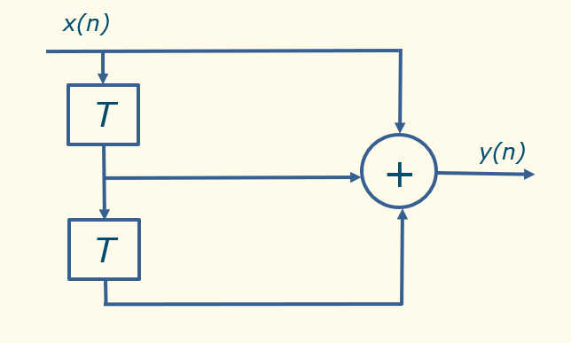
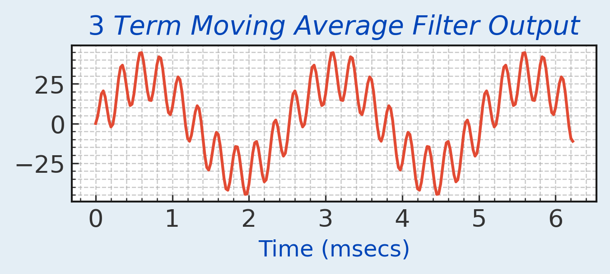
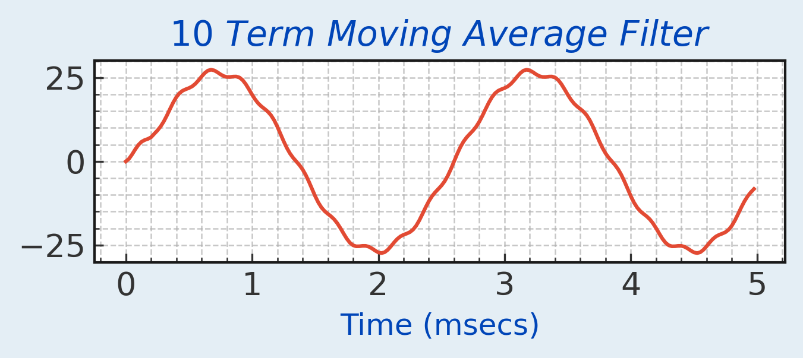

The Moving Average Filter is shown in the Figure below. The output is y(n) = x(n) + x(n-1)+ x(n-2). This equation states that the output is obtained by adding 2 delayed versions of the input to itself. Modify the previous difference filter code to obtain the averaging filter.

Looking at the filter output you can see that the low frequency content is amplified relative to the high frequency content.

Increasing the number of delays to 9, gives a 10 term filter. This increases the averaging effect.
